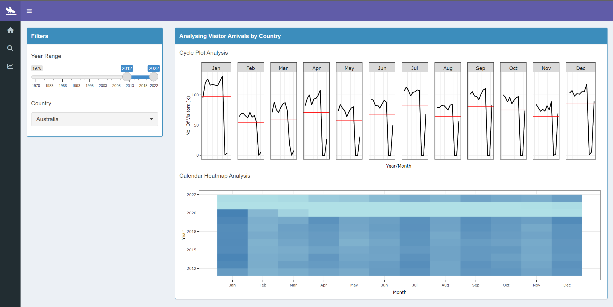

User Guide
Summary
This tab can be used to analyze the key insights for the Visitor Arrival Analysis’ R Shiny application.

- Start by selecting the year range of the historical data to be explored using the
Year Rangeslider. The default year range is from1978to2022. - Next, choose a region to have a quick look into using the multi-select drop-down filter for
Regions. The default selection isAllregions. SelectNoneto un-select all options. It is also possible to individually mark the check-boxes of the regions that are to be analyzed.

Upon modifications of the filters, the visualizations in the Summary tab will be automatically updated:
a. The total number of visitors, represented in millions, that have arrived in Singapore
b. The total number of countries that have visited Singapore
c. The age range of most visitors that have visited Singapore in 2022
d. The average length of days most visitors have stayed in Singapore in 2022
e. The visualization of time series analysis for visitor arrivals across time
Explore
There are three sub-sections for the explore section. These sections contain analysis on the Tourism Markets, the Demographics of Visitors as well the Length of Stay of these visitors.
Tourism Markets
This tab can be used to analyze the country-level analysis of Visitor Arrivals in Singapore.

- Start by selecting the year range of the historical data to be explored using the
Year Rangeslider. The default year range is from2012to2022. - Next, choose a country to drill down into using the single-select drop-down filter for
Country. The default selection isAustralia. The filter is sorted in alphabetical order. If a country that you want to analyze is not included in the filter, it would mean that there is no record of a person from that country visiting Singapore.

Upon modifications of the filters, the visualizations in the Explore - Tourism Markets tab will be automatically updated:
a. The visualization of cycle plot analysis for visitor arrivals across month and year. The red line indicates the average number of visitors that arrived on a particular month.
b. The visualization of calendar heatmap analysis to compare the visitor arrivals by month and year. The darker colour indicates a higher number of visitor arrivals while the lighter colour indicates a lower number of visitor arrivals.
Demographics
This tab can be used to analyze the age and gender breakdown of the Visitor Arrivals in Singapore..

The left panel depicts the analysis by
Genderwhile the right panel depicts the analysis byAge GroupThe visualizations in the Explore - Demographics tab are for the year
2022:a. The visualization of time series analysis for visitor arrivals by gender
b. The visualization of heatmap analysis for visitor arrivals by month and gender
c. The visualization of horizon pot analysis for visitor arrivals by month and gender
d. The visualization of time series analysis for visitor arrivals by age group
e. The visualization of heatmap analysis for visitor arrivals by month and age group
f. The visualization of horizon pot analysis for visitor arrivals by month and age group
Length of Stay
This tab can be used to analyze the length of stay of the visitors that arrive in Singapore.

The visualizations in the Explore - Length of Stay tab are for the year
2022:a. The visualization of time series analysis for visitor arrivals by the visitor’s length of stay
b. The visualization of horizon pot analysis for visitor arrivals by month and visitor’s length of stay
c. The visualization of heatmap pot analysis for visitor arrivals by month and visitor’s length of stay
d. The visualization of area chart anaysis for visitor arrivals by month and visitor’s length of stay
Forecast
This tab can be used to analyze the forecasts that can be carried out on a regional level. This tab contains 8 forecasting models, their accuracy of forecasts, results of the forecast and refitted forecasts, as well as the residuals of these forecasts.
- In the filters section, start by selecting a region to have a quick look into using the multi-select drop-down filter for
Regions. The default selection isAllregions. - Next, select the year range of the historical data to be explored using the
Year Rangeslider. The default year range is from2018to2022. - Choose the year range that is to be forecast using the
Forecast Rangeslider. The default is set to forecast for the next3years. - Next, choose the split ratio that will be used to split the data into a training and testing set using the
Train/Test Split Ratioslider. The default ratio is set to0.8. In this case, the first 80% of the data will be used for training while the remaining 20% of data will be used for testing. - Click on the
Forecastbutton to apply the modifications that were made to the filters.
On top of filters, the forecast models’ parameters can be customizes for each of the available forecast models. The forecasting models are; ARIMA, Prophet, glmNet, Random Forest, SVM, XGBoost, ARIMA Boost and Prophet Boost.
- In the model parameters section, first select the model to customize using the single-select drop-down filter for
Model. The default model selected is theARIMAmodel.
- Based on the model that is selected, the parameters which are available for customization will be displayed.
- Once the parameters have been modified, click on the
Forecastbutton to apply the changes.
- Upon selecting the
forecastbutton, a popup will be shown with the messagePlease Waitto indicate that the models are being built.

Once the pop-up is no longer shown, it means that the visualizations in the Forecast tab have been updated:
a. Three tabs containing visualizations on the forecast model, refitted model and the residuals of the forecast can be viewed under the time series forecasting of visitor arrivals section
b. A table capturing the performance accuracy of each model will be displayed under the accuracy table of forecasts section